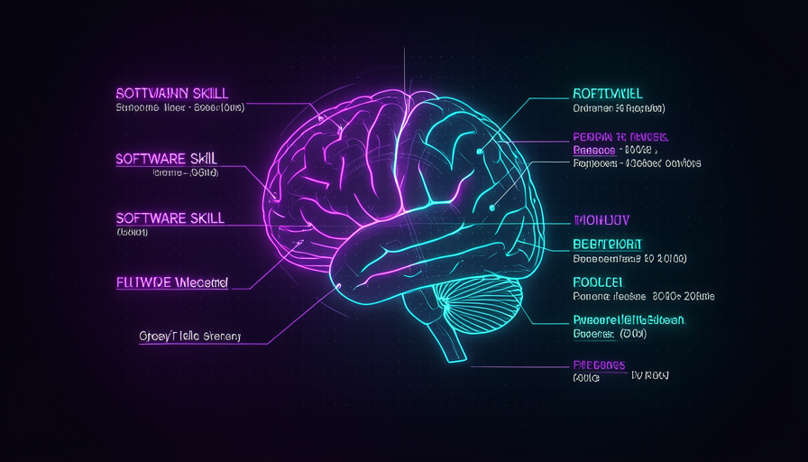
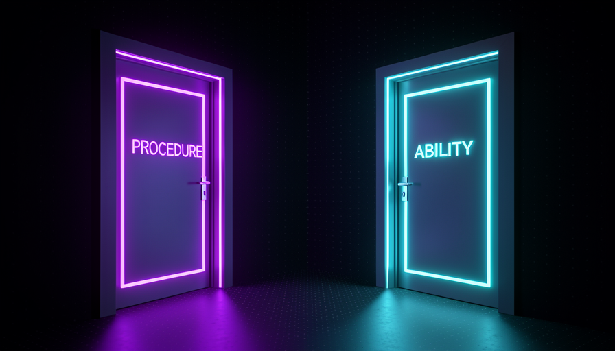
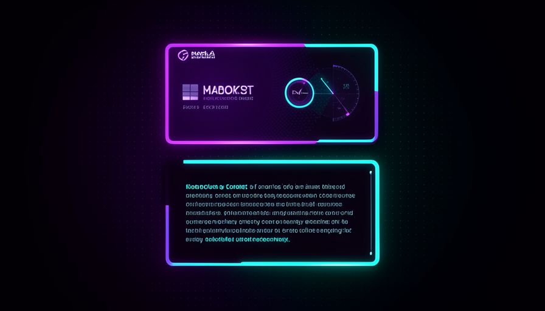

📖 Living glossary (read first — come back whenever you need to)
Track 1 has already established the basic vocabulary (model, prompt, agent, harness). Here are the terms new from this skills track — remember these:
SKILL.md) that teaches the agent to do something your way, consistently. It’s the "reusable procedure" from Track 1, now opened up inside.--- e ---. It brings name e description. It’s the “label on the can.”🧩 What is a skill
🧠 Imagine it this way: imagine you have a very smart new employee who has never worked in the yours company. Every time it does a task, you have to explain the house rules again. A skill is the laminated “procedure card” you stick on the wall: it reads it once and then does things your way—consistently.
A skill is, in practice, a instruction text file that you give the agent for it to perform a task the same way every time. The most common format is a file called SKILL.md (plain text, in Markdown). It has two parts: a short header (the frontmatter) and the body, which contain the actual instructions. Let’s open up each part in topic 2.
Why does this matter so much in this learning path? Because the skill is where you encodes your way of working and returns that to the harness—without needing to repeat everything in every conversation. Matt Pocock sees skills as the heart of the modern harness: they work across several agents (Claude Code, Codex, and others) and are installed with npx skills latest add. O common mistake for beginners is treating a skill as a "long prompt I paste in every time." It isn't: the skill stays saves, it’s versionable, can be shared with the team, and—this module’s central point—it can be triggered by you or by the AI itself. Who pulls the trigger changes everything.
The same skill, two possible triggers: you or the model. That choice is the module’s topic.

⚠️ Common beginner mistake
Treat a skill like a "prompt I paste in every time." A skill is a saved, reusable, shareable file — and who triggers it (you or the AI) is your decision, not a minor detail.
In one sentence: a skill is a saved instruction file (header + body) that can be triggered by you or by the model itself.
Going deeper (optional): why is the format just Markdown?
Markdown is plain text—the same "language" the model already thinks in. That’s why a skill doesn’t need a compiler or code: it’s a natural language instruction, with a minimal header so the agent knows when it serves. That’s what lets the same skill run in Claude Code, Codex, and the rest: they all read the same text file.
🏷️ Frontmatter and body
🧠 Imagine it this way: think of a can of food. The label says the name and what it’s for ("tomato sauce · for pasta"). The content is the real sauce. In a skill, the frontmatter is the label; the body is the sauce.
Every skill has two clearly separate parts. The first is the frontmatter: a little block at the top, between --- e ---, with two essential fields— name (the short name) and description (a sentence saying what the skill does and when using it). The second part is the body: everything after the header, in free-form text. That’s where the step-by-step instructions, rules, and examples live.
The practical difference between the two is crucial and comes up again throughout the rest of the module: the body is only read when the skill is activated; while the description of the frontmatter can stay "in view" of the model all the time, so it can decide on its own whether to call the skill. In Pocock’s words, "every skill leaks its description in the context window". In other words: the label costs context even when the skill isn’t used; the body doesn’t. Keep that in mind—it’s the seed of module 3.2 ("skill context cost"). The common mistake here, you write a description giant “just in case”: it becomes dead weight in the context. Good description is short and states the trigger exactly.
--- name: commit-conventional description: Cria a mensagem de commit no padrao Conventional Commits a partir das mudancas em stage. Use quando o usuario pedir "commita", "faz o commit" ou "gera a mensagem de commit". --- # Commit Conventional Quando acionada, faca nesta ordem: 1. Rode `git diff --staged` e leia o que mudou. 2. Escolha o tipo: feat | fix | docs | refactor | test | chore. 3. Escreva o titulo: `tipo(escopo): resumo no imperativo` (ate 72 chars). 4. No corpo, explique o PORQUE da mudanca em 1-3 linhas (nao o "o que"). 5. Se houver breaking change, adicione `BREAKING CHANGE:` no rodape. 6. Mostre a mensagem final e PERGUNTE antes de rodar `git commit`. Regras: - Nunca invente arquivos que nao estao no diff. - Portugues, voz imperativa, sem emoji no titulo.
Real-world example of SKILL.md: among the --- the frontmatter (label) is here; below is the body (the procedure).
In one sentence: frontmatter = a short label that stays visible (and uses context); body = the procedure, read only when the skill is activated.
🕹️ Procedures (you invoke)
🧠 Imagine it this way: a procedure is like your car’s “turbo mode” button: it only turns on when you presses it. The car never decides to turn on the turbo by itself—the driver is in control.
The first of the two types of skill is the procedure. The golden rule: who triggers it is you. You invoke the skill on purpose — by typing its name, choosing it from a menu, or running a command — and it makes the model “behave in a way” you’ve defined. In Pocock’s words, procedures are skills that “make the model behave in a way” and that you triggers. Everyday examples of what it does: the skill grill-me (that turns the model into an interviewer), the two-PRD e a to-issues — it links the three in the order it wants.
Why does this matter? Because with procedures you stay at the wheel. You decide which procedure to include, when to use it, and in what order. There are no surprises: the model doesn’t pull anything in on its own. Pocock is explicit about preferring this mode: "I know my skills, I don't want to delegate my thinking" — I know my skills; I don't want to delegate my thinking. The common mistake is thinking this is “extra work.” It’s actually control: you trade a little automation for total predictability, and you also prevent descriptions from leaking into the context (the topic of 3.2).

In one sentence: procedure = the skill that you deliberately triggers it to make the model behave the way you decided.
🤖 Abilities (the model invokes)
🧠 Imagine it this way: a ability is like your car’s ABS brakes: you don’t press anything—the car feels the situation (skidding) and triggers it on its own. The ability is the skill the AI pulls in on its own when it "realizes" it needs it.
The second type is the ability. Here the golden rule is turned upside down: who triggers it is the model. It reads the description of the available skills and, when it "thinks" one fits the task, pulls it in on its own—without you asking. The example Pocock gives is a skill for coding standards (coding patterns): the model invokes it automatically when it’s about to write React, because the description says something like “use when writing React components.” The skill then reminds the model of rules like “must not use useEffect, should use something else.”
The advantage is automation: the right rule kicks in at the right time, without you having to remember to invoke it. The downside — and this is why Pocock emphasizes it so strongly — is that the model decides, and each ability needs to maintain its description in plain sight so it’s “discoverable.” As we saw, this leaks context: 100 skills become 100 descriptions hanging in the window. Another school of thought, Superpowers (from the Obra project), embraces exactly this mode — the model in control. Pocock prefers the opposite. The common mistake is filling your setup with abilities “because they’re automatic” and discovering too late that the context is cluttered and behavior is unpredictable.
🔬 Worked example: same rule, two paths
Scenario: you want the agent to never use, when writing React, useEffect without needing to. Same rule, packaged two ways:
As ABILITY
description: "Padrões de React. Use ao escrever componentes." → the model reads this, realizes it’s going to write React, and pulls the skill on its own. Automatic, but the description always leaks into the context.
As PROCEDURE
Same skill with disable model invocation: true. → the model no sees it; you type /react-standards whenever you want. Predictable and doesn’t clutter the context — the approach Pocock prefers.
Conclusion: the content of the skill can be identical. What changes is who pulls the trigger — and this is the design adjustment you control.
In one sentence: ability = the skill that the model triggers it automatically when it reads the description — convenient, but it makes the decision and the label leaks through.
🚪 The two doors
🧠 Imagine it this way: the same room (the skill) has two doors. The door on the left only opens with your key (procedure). The model can open the door on the right by itself (ability). You decide which doors to leave unlocked.
Now put it all together. Procedure and ability aren't two different things — are two entry points for the same skill. The content (the body) can be identical; what changes is who holds the key. That’s why Pocock talks about “two types of skill,” but ultimately it’s a design decision for each skill: do I let the model invoke it (ability), or do I lock that door and invoke it myself (procedure)? The technical setting that locks the model out is disable model invocation — you’ll see it in detail in module 3.2.
The practical consequence is huge. Every open model door comes with a cost: description of that skill stays in context so the model can find it. Locking the door (a pure procedure) zeroes out this cost and gives you predictability. Because Pocock prefers to be "in the driver's seat," he keeps most model doors locked and keeps the knowledge with the human—he cites the skill engineering zoom out as one of the things he hides from the model. It’s not a universal rule; it’s his style. The common mistake is not even realizing this choice exists—the person installs 50 skills, all as abilities, and the context turns into a flea market.
Quick recall: in a ability, who triggers the skill?
In one sentence: procedure and ability are two doors to the same skill — the difference is who has the key (you or the model).
🎯 Which one to use and when
🧠 Imagine it this way: autopilot × steering wheel. On autopilot (ability), the car decides; with the steering wheel (procedure), you decide. Familiar roads and critical tasks call for the steering wheel; repetitive and safe tasks can use autopilot.
Wrapping up: the choice isn’t “which is better,” it’s “who should decide this skill". Use ability when the rule is generic, always desirable, and cheap to get wrong (e.g., style patterns that always apply) — the convenience of letting the model pull it in on its own is worth it. Use procedure when you want to be in the driver’s seat: reasoning tasks, chaining steps, or anything where predictability matters more than automation. Pocock chains grill-me → two-PRD → to-issues as procedures for exactly that reason. And remember the cost: each ability uses up your description leaking into the context, so locking doors (procedure) is also good hygiene. Use the guide below when creating or auditing a skill:
Pra cada skill, pergunte: QUEM deve apertar o gatilho?
ESCOLHA ABILITY (modelo invoca) se:
[ ] a regra vale quase sempre que o tema aparece (ex.: padroes de React)
[ ] errar o momento e barato
[ ] voce QUER automacao, nao controle fino
ESCOLHA PROCEDURE (voce invoca) se:
[ ] e raciocinio / planejamento / etapas encadeadas
[ ] previsibilidade > automacao ("quero estar no volante")
[ ] a description ocupando contexto te incomoda -> disable model invocation: true
Regra de bolso (estilo Pocock): na duvida, PROCEDURE.
"I know my skills, I don't want to delegate my thinking."

Quick recall: why does Pocock, when in doubt, prefer procedure?
In one sentence: ability for generic rules that are easy to get wrong; procedure (when in doubt, use this) for reasoning and control.
🧾 Module Summary
Next module:
3.2 — Skill context cost: why each description “leaks,” what 100 skills in context means, and how to use them disable model invocation.